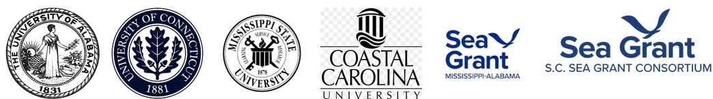
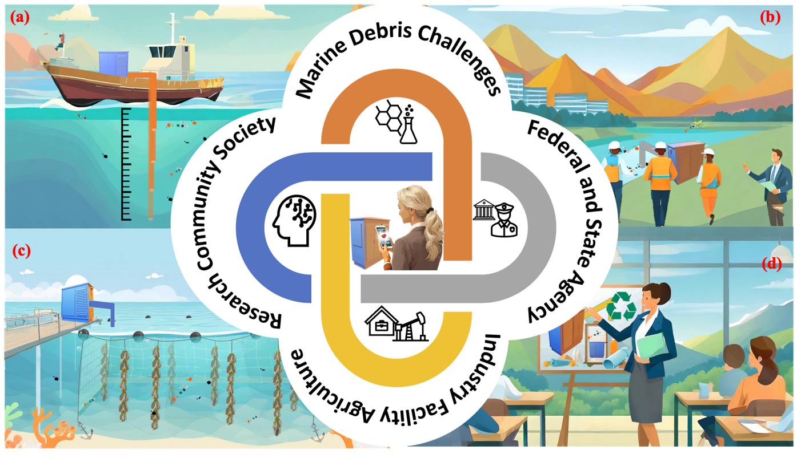
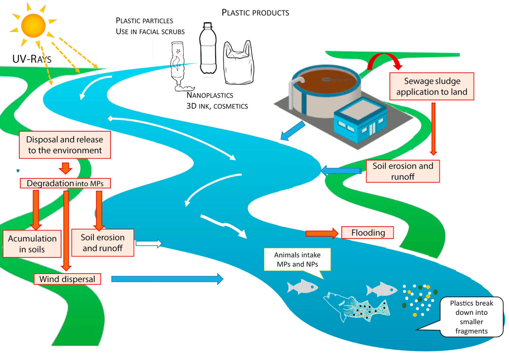
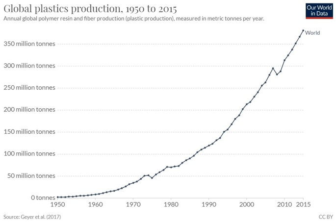
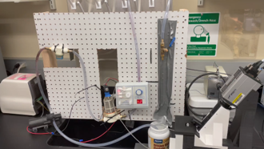
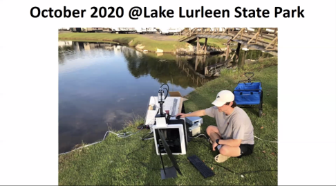
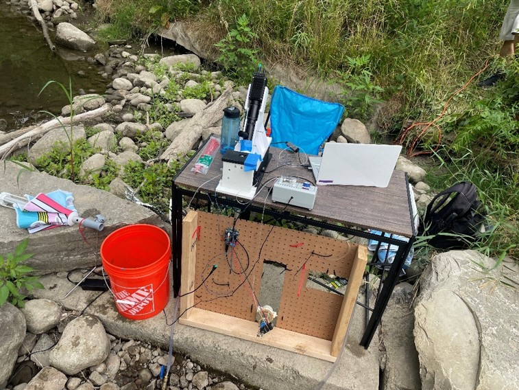
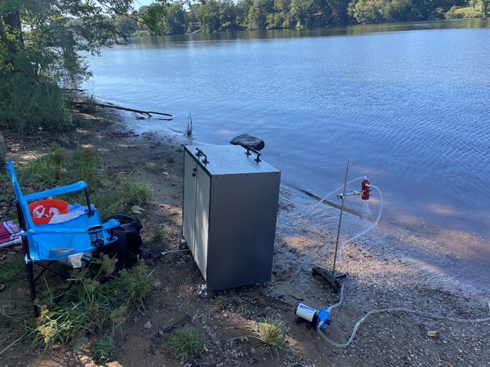
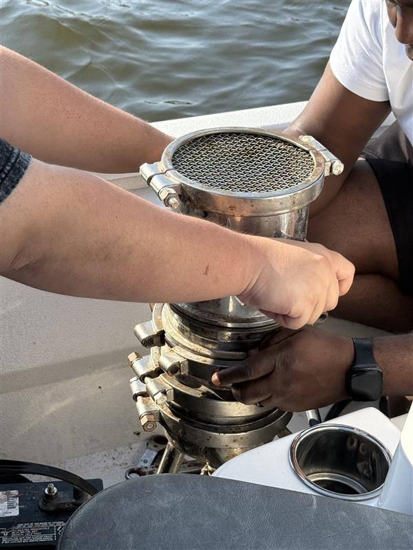

Addressing the Microplastic Problem through a New Lens
A portal to our research for developing an integrated sensor to detect and monitor microplastics
Scroll
Our Story
Microplastics are found worldwide, but they are notoriously difficult to study due to their small size and the abundance of other non-plastic particulates in water. Our work aims to develop a sensor that can identify microplastics in a variety of water conditions, while providing data in near real-time.
Through advanced nanofiltration, combined with a high-speed, machine-learning integrated camera and Raman laser, our team has been designing and testing a cutting-edge instrument to lead microplastic research into a new frontier.
We strive to take a process that traditionally involves days or even weeks of meticulous labwork, and reduce it to a matter of minutes, offering scientists, municipalities (drinking water or wastewater treatment), aquaculture, and educators a modern approach for addressing microplastics within their work and communities.
Our Team
PI : Mark Cheng, PhD - The University of Alabama / Indiana University
Co-PI: Puxian Gao, PhD - The University of Connecticut
Co-PI: Adam Skarke, PhD - Mississippi State University
Co-PI: Ebenezer Nyadjro, PhD - Mississippi State University
Co-PI: Shaowu Bao, PhD - Coastal Carolina University
Co-PI: Michael Fedoroff, PhD - The University of Alabama Water Institute
Anthony Vedral, The University of Alabama Water Institute, Mississippi-Alabama Sea Grant Consortium
Partners: NOAA Sea Grant, Mississippi-Alabama Sea Grant Consortium, South Carolina Sea Grant Consortium, Alabama Wildlife Federation


Community building and engagement bring together research, federal and state agencies,
industry, agriculture, and society to address marine debris and microplastics challenges.
A Deep Dive into Microplastics
Microplastics, defined as plastic particles smaller than 5 mm in size, can be found throughout water sources worldwide, including both natural waterways and human systems such as municipal drinking water supplies. Most microplastics originate from larger pieces of plastic that weather and fragment over time. Due to the complex molecular structure of plastics, they degrade very slowly, resulting in continued accumulation of microplastic concentrations in our waters.
Plastics have been commercially produced for less than a century, but as global plastic demand grows unsustainably, production of plastic items is ever-increasing, resulting in a cascading problem. Because of plastic’s relatively recent invention, scientists are now just beginning to understand its potential negative effects. Since the turn of the 21st century, researchers have discovered the presence of micro- (and now nano-) plastics within the water we drink and food we eat. More recently, scientists have identified microplastics and nanoplastics throughout a myriad of systems within human bodies. Researchers are just now beginning to understand some of the potential threats microplastics pose to our environment and ourselves, with new data continuing to shed light on this growing problem.

Schematic of sources, pathways, exposure, and fate of microplastics across the watershed.
Global Plastic Production over Time
Sensors

Tracking our Progress
Early 2020
First benchtop prototype and flow-control tests in the lab.

Oct 2020
Initial field deployment and sampling workflow validation.

Summer 2022
Pilot deployments in streams; ruggedized enclosure and power system.

2024 · Tested by USGS
Independent validation and side-by-side comparisons.

2025
Field test

Thank you to our sponsor, NOAA Sea Grant, for funding our work.